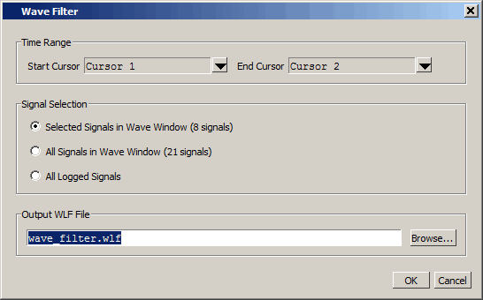

You can save
a waveform section between two cursors.
Procedure
- Place the first cursor (Cursor
1 in Figure 1) at one end of the portion of simulation
time you want to save.
- Click the Insert
Cursor icon to insert a second cursor (Cursor 2).

- Move Cursor 2 to the other
end of the portion of time you want to save. Cursor 2 is now the
active cursor, indicated by a bold yellow line and a highlighted name.
- Right-click the time indicator
of the inactive cursor (Cursor 1) to open a drop menu.
Figure 1. Waveform Save Between Cursors
- Select Filter Waveform to
open the Wave Filter dialog box. (Figure 2)
Figure 2. Wave Filter Dialog 
- Select Selected
Signals in Wave Window to save the selected objects
or signals. You can also choose to save all waveforms displayed
in the Wave window between the specified start and end time or all
of the logged signals.
- Enter a name for the file
using the .wlf extension. Do not use vsim.wlf since
it is the default name for the simulation dataset and will be overwritten
when you end your simulation.